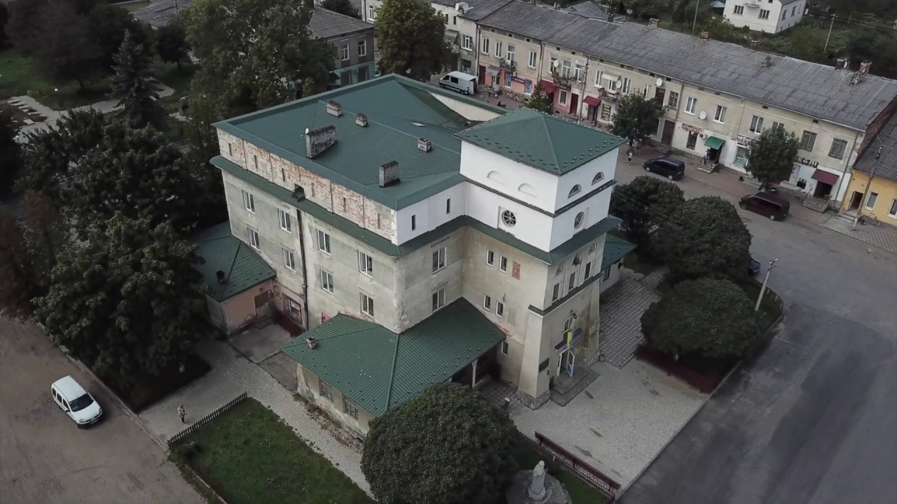
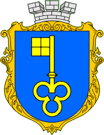

-
Журавно: тихе містечко, де писалася історія Європи
-
Перша письмова згадка про Журавно датується 1435 роком. Його назва, як вважається, походить від чорних журавлів, які селилися в тих краях. До кінця XV ст. Журавно належало до родини Ходорівських-Журавнінських. У 1468 році ними було засновано тут римо-католицьку парафію і збудовано костел Відвідання Пресвятої Діви Марії, який не зберігся до нинішнього часу.
-
На початку XVI століття містечко перебувало в руках родини Реїв, з якої походить найславетніший уродженець Журавна – класик польської літератури Миколай Рей. Нині на його честь встановлено меморіальну таблицю на міській ратуші.
-
У другій половині Журавно знову повернулося до попередніх власників – Ходорівських-Журавнінських. За них місто отримало Магдебурзьке право – у 1563 році. Наприкінці XVI століття місто перебуває уже у володінні Жолкевських, згодом перейшло до Сапєгів.
До 200-ї річниці Журавенської битви тут встановили пфм'ятник у формі кам'яної колони на високому постаменті.
-

Ратуша Журавно
-

Герб Журавно